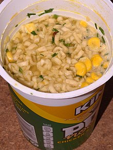

How To Make A Pot Noodle

Description
Are you a fan of Pot Noodle? If so, you'll absolutely love this recipe that can serve up to 1 person!
Ingredients
- Pot Noodle
- Kettle
- Water
- Salt
- Fork
Steps
- Open the pot noodle and remove sachet
- Add water to kettle and boil it
- After kettle has boiled fill the pot noodle to the line with water
- Allow to sit for 3 minutes
- Add contents of the sachet in the pot noodle
- Empty salt shaker into pot noodle
- Add the fork and stir until ready to eat
- Throw it in the trash and get some real food